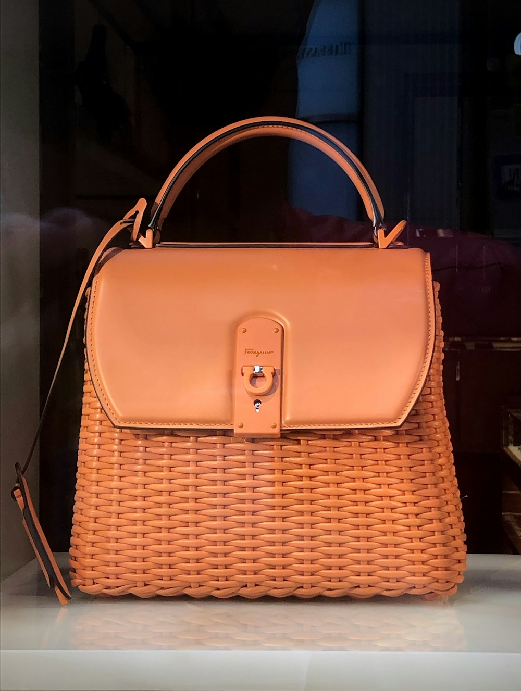

In the rarefied echelon of haute maroquinerie (luxury leathercraft), the fundamental measure of a handbag's soul and structural longevity lies in its seam construction. Today, over ninety-nine percent of commercial luxury handbags—even those commanding four-figure price tags—are assembled on electric sewing machines using Machine Lockstitching. While machine stitching is fast, it introduces a fatal structural flaw into leather goods.
For centuries, the supreme benchmark of equine saddlery and museum-grade leather luxury has been Traditional French Saddle Stitching (Couture Sellier). At Amber Purse Fox, every handbag, evening clutch gusset, and shoulder strap is hand-sewn using two needles and a single continuous strand of beeswaxed linen thread. In this masterclass, our master leather tailors deconstruct the mechanics, geometry, and unyielding durability of hand saddle stitching.
1. The Mechanical Flaw of Machine Lockstitching
Why machine-sewn seams inevitably unravel:
- The Two-Thread Interlock Loop: An electric sewing machine uses an upper needle thread and a lower bobbin thread that catch and loop together midway inside the leather puncture hole.
- Friction Abrasion and Runaway Unraveling: If external surface friction or tension breaks a single stitch in a machine-sewn seam, the entire row of stitching loses tension, pulling loose like a zipper and allowing the bag to burst open.
- Perpendicular Punch Tearing: Machine needles punch circular or knife-edge vertical holes that weaken the leather grain fibers between stitches, creating micro-perforations prone to tearing.
“A machine lockstitch is an assembly-line shortcut. A two-needle French saddle stitch is a permanent architectural joint that outlives its maker.”
2. The Architecture of the Two-Needle French Saddle Stitch
How authentic hand-sewing creates indestructible seams:
- Single Thread, Two Needles: The artisan threads a harness needle onto each end of a single continuous strand of pure French linen thread (Fil Au Chinois).
- Slanted Diamond Awl Piercing: Hand-forged French pricking irons and diamond awls pierce the leather at a precise 45-degree angle, respecting the natural grain fiber alignment.
- The Figure-Eight Knot: Both needles pass through the same hole from opposite directions, cast over one another into an internal figure-eight locking knot that anchors the leather fibers from both sides.
- Independent Seam Security: If a saddle stitch is severed by a razor blade on one side, the remaining thread on the opposite side remains securely locked in place, maintaining full seam integrity.
3. Beeswax Conditioning and Linen Thread Resilience
The botanical and natural protection of traditional thread:
Natural flax linen possesses immense tensile strength without the elastic stretch of synthetic nylon. Before stitching, our artisans pull each thread by hand through pure unbleached organic beeswax. The wax lubricates the thread during passage, seals the hole against moisture ingress, and permanently fuses the fibers together.
4. Seam Construction & Durability Comparison Matrix
| Construction Technique | Stitch Mechanism | Tensile Seam Durability | Handcrafted Time Invested |
|---|---|---|---|
| French Saddle Stitch (Couture Sellier) | Two-Needle Intersecting Figure-8 Knots | ★★★★★ (Never Unravels / 100+ Years) | 18–35 Hours Hand Labor |
| Electric Machine Lockstitch | Upper & Lower Bobbin Interlock | ★★☆☆☆ (Unravels if one stitch breaks) | 4–8 Minutes Machine Run |
| Glued & Bonded Edge Assembly | Solvent Adhesive Contact Cement | ★☆☆☆☆ (Delaminates in humidity) | 2 Minutes Spray Application |
5. Edge Beveling, Heated Creasing, and Edge Kote Polishing
After stitching, the leather edges undergo five stages of hand-finishing: beveling with miniature curved gouges, applying heated edge creasing irons to compact the grain fibers, and polishing with organic beeswax and bone folders for a glass-smooth edge.
6. The Aesthetic Rarity of the Slanted Hand Stitched Line
A trained eye can spot a hand-saddle stitched bag from across the room: the stitches sit at a dynamic, elegant 45-degree angle with a gentle three-dimensional bead that machines are physically incapable of replicating.
7. Securing Heavy Baltic Amber Bezels and Solid Brass Latches
Mounting solid amber gemstone frames onto leather requires exceptional tensile stability: hand-saddle stitching anchors the brass mounting tabs through multiple layers of saddle leather with unbreakable structural strength.
8. An Heirloom Built for Generations
When you invest in a hand-saddle stitched Amber Purse Fox creation, you are acquiring a piece of authentic craftsmanship engineered to be handed down to your grandchildren in pristine condition.
9. Stitch Pricking Density and Calibrated Spacing Gauges
Our artisans utilize traditional Vergez-Blanchard pricking irons calibrated to 8 or 9 stitches per inch (SPI), creating an impeccably dense, refined seam profile that enhances evening clutch elegance.
10. Traditional Wooden Clam Saddler Clamping Protocols
The leather panels are held firmly inside a traditional wooden saddler's clam (*pince à coudre*) gripped between the artisan's knees, freeing both hands to maintain uniform thread tension on every single stitch.
11. An Eternal Covenant of Hand-Stitched Leathercraft
At Amber Purse Fox, our devotion to two-needle French saddle stitching preserves the highest traditions of artisanal leathercraft, ensuring that every handbag is an indestructible work of art.
12. Stitch Pricking Density and Calibrated Spacing Gauges
Our artisans utilize traditional Vergez-Blanchard pricking irons calibrated to 8 or 9 stitches per inch (SPI), creating an impeccably dense, refined seam profile that enhances evening clutch elegance.
13. Traditional Wooden Clam Saddler Clamping Protocols
The leather panels are held firmly inside a traditional wooden saddler's clam (*pince à coudre*) gripped between the artisan's knees, freeing both hands to maintain uniform thread tension on every single stitch.
14. The Supreme Grace of Hand-Pulled French Seams
Examining the rhythmic, slanted bead of a two-needle French saddle stitch reveals the hand of a master artist, where every millimeter of linen thread is pulled with calibrated passion and pride.
15. The Master Blueprint for Indestructible Leathercraft
At Amber Purse Fox, our devotion to authentic Couture Sellier hand-stitching honors two centuries of Parisian saddlery heritage, delivering bespoke leather handbags that withstand generations of use without failure.
16. Edge Gusset Skiving and Beveled Seam Transitions
Before stitching, leather edges are hand-skived with Japanese steel knives to a feathered 0.8mm thickness, creating a seamless multi-layer lamination that flexes gracefully without bulky creasing.
17. An Eternal Covenant of Artisanal Saddlery Mastery
By pairing pure beeswaxed French linen cord with master diamond awl piercing, Amber Purse Fox creates leather seams that represent the ultimate pinnacle of strength, elegance, and durability.
18. Hand-Polished Boxwood Creasing and Edge Sealing
Running a heated boxwood creaser along the perimeter of the leather panels compresses the natural collagen grain into an elegant recessed decorative line while permanently sealing the edge fibers against moisture.
19. The Unrivaled Supremacy of Hand-Sewn Leathergoods
Investing in a traditional two-needle French saddle-stitched handbag transforms your daily luxury experience, delivering an indestructible work of art that machines can never duplicate in strength, beauty, or soul.
20. Custom Beeswax Blending with Damar Resin and Carnauba
Our atelier blends pure unbleached organic beeswax with small proportions of natural carnauba palm wax and damar resin, creating a specialized thread glaze that locks linen fibers with permanent water-resistant strength.
Frequently Asked Questions on Hand Saddle Stitching

Henri Beaulieu
Master Leather Artisan at Amber Purse Fox. Henri completed his saddlery mastership in Paris before joining our Manhattan atelier to craft bespoke amber clutches.